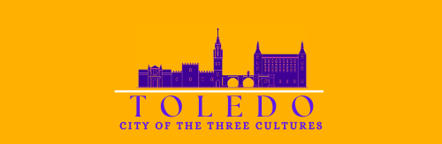

A Timeless Journey Through History
Toledo, Spain—a city perched dramatically on a hill above the Tagus River—stands as a living monument to history and culture.
Known as the "City of Three Cultures," Toledo is a unique blend of Christian, Jewish, and Islamic influences.
With its UNESCO World Heritage status, this destination offers a remarkable experience for cultural enthusiasts,
architecture lovers, and culinary adventurers.
The Research Process
To create a comprehensive report on Toledo, I relied on reputable sources, including UNESCO, historical archives,
and tourism organizations. I also applied Cook et al.'s (2010) Destination Model to categorize Toledo under
"Links to the Past." This framework allowed me to focus on Toledo’s historical and cultural significance as its
main attraction. 3 aspects I focused on was (1) the historical landmarks such as The Primate Cathedral of Saint Mary of Toledo, (2)
the gastronomy experience of the regions unique identity and (3) the tourist demographic of Toledo and how we can target another
demographic and attract more tourism.
Toledo’s Unique Appeal
Toledo’s charm lies in its ability to transport visitors back in time. Walking through its medieval streets feels like stepping into a storybook.
The city retains its Gothic architecture and historic character, making it a perfect destination for cultural immersion. Its religiosu harmony
and lively festivals adds a vibrant layer to the city's spiritual and festive atmosphere. Toledo also targets culinary tourists with their own category
focused on gastronomy. While not as heavily focused as the cultural tourism, respective landing pages can be found on the official website which helps recommend
travelers the best place to food landmarks.Apart from being a world heritage site, Toledo was the 2016 Spanish Capital of Gastronomy due to its modern,
yet traditional cuisine of local origins.
Challenges in Positioning Toledo as a Destination
Toledo faces several challenges in targeting this new segment. The first challenge is the overshadowing presence of Barcelona and Madrid,
two of Spain’s and Europe’s most prominent tourist destinations. A significant disadvantage for Toledo is that both Barcelona and
Madrid have major international airports, making them more accessible and convenient for tourists. In contrast, Toledo lacks a
main airport, with the nearest options being Madrid Barajas Airport or Barcelona's airport. The second challenge is the competition
from other UNESCO World Heritage sites across Spain. Many of these sites are more popular among international tourists and
often easier to access directly from airports, making them more attractive and manageable travel options compared to Toledo.
Developing a New Theme
Toledo should focus on distinguishing itself with a new theme across all their media to gain a distinguish; aesthetic that can help build brand recognition.
Toledo lacks a strong identity due to their different themes and logos used across all of their media platforms. A new logo can help with their new aesthetic.
One that can portray the architectural brilliance of Toledo. With that, I had made a concept logo that would better suit Toledo.

Toledo tourism logo redesign.
Content Translation
The second strategy involves leveraging content marketing by translating all of Toledo's platforms to better appeal to a broader target market.
Currently, the official tourism website for Toledo is available only in Spanish, leaving potential international visitors reliant on
tools like Google Translate, which can be inconvenient and less effective for research. By translating the website into multiple
languages, Toledo can expand its reach to international audiences instead of catering solely to domestic tourists.
Your Next Steps
Ready to explore Toledo yourself? Consider visiting its iconic landmarks, sampling its culinary delights, and immersing yourself in its vibrant festivals.
This city promises an experience that blends history, culture, and modern tourism trends seamlessly.
To read the full report, click here.
 Nov 15, 2024
Nov 15, 2024